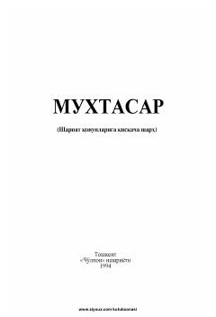

MShariat qonunlariga qisqacha sharh — kundalik hayot uchun islomiy yo'llanma.
"Muxtasar" — shariat qonunlariga qisqacha sharh beradigan islomiy fiqh kitobi bo'lib, har bir xonadonda bo'lishi zarur deb hisoblangan asarlardan biridir. Unda kundalik hayotdagi eng kichik masaladan tortib, eng katta muammolargacha shariat nuqtai nazaridan baholanadi. Kitob Rashid Zohid va Akram Dehqon tomonidan nashrga tayyorlanib, 1994-yilda Toshkentda "Cho'lpon" nashriyotida chop etilgan.